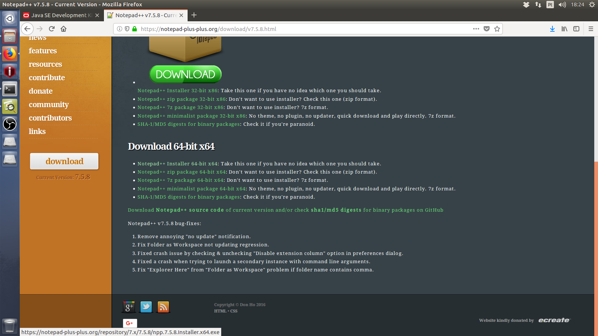

Tutorial de download e instalação do Java JDK 11 e configuração das variáveis de ambiente no Windows
A primeira coisa que precisamos fazer é acessar o link abaixo:
Clique Aqui para baixar o Java SE 11 LTS
A tela abaixo será exibida, clique no botão DOWNLOAD.
Precisamos aceitar os termos de uso clicacando em "Accept Licensing Agreement", somente assim será liberado o download.
Escolha a versão correspondente ao seu sistema operacional.
Agora clique no link abaixo para realizar o download do editor de textos Notepad++.
Clique Aqui para baixar o Notepad++
Escolha entre as versões de 32 e 64 bits, de acordo com o seu sistema operacional, conforme as imagens abaixo:
Configuração das Variáveis de Ambiente no Windows
No Windows explorer clique com botão direito em "Este Computador" e escolha a poção "Propriedades".
Clique em "Configurações avançadas do sistema"

Na janela que irá se abrir clique em "Variáveis de Ambiente"
Vamos criar duas variáveis de sistema e modificar uma terceira conforme será explicado abaixo:
Na seção "Variáveis de Sistema" vamos clicar no botão NOVO.
A janela abaixo será exibida.
Vamos preencher com os seguintes valores:
Nome da variável: JAVA_HOME
Valor da variável: C:\Program Files\Java\jdk-10.0.2
Em Valor da variável você irá preencher com o caminho onde está instalado o Java no seu computador, esse valor muda para cada computador, fique atento a isso.
Você pode verificar o local onde está instalado seu Java conforme a imagem abaixo:

O resultado será esse da imagem abaixo:
Clique novamente em NOVO para criarmos a segunda variável.
Vamos preencher com os seguintes valores:
Nome da variável: CLASSPATH
Valor da variável: .;%JAVA_HOME%
Ainda na janela de Variáveis de Sistema vamos alterar a variável PATH, clique nela e em seguida clique em EDITAR.
A janela abaixo será exibida, vamos clicar em NOVO.
Valor da variável: %JAVA_HOME%\bin\
Pronto, se você fez tudo corretamente seu ambiente de desenvolvimento está configurado.
Para testarmos vamos abrir um prompt do sistema, para isso pressione no seu teclado a tecla SUPER (aquela com a bandeira do Windows) e a tecla da letra R juntas, a janela abaixo será exibida:
Digite CMD e tecle ENTER
Na janela que se abriu digite o seguinte comando:
java -version
Se o resultado for parecido com o mostrado abaixo Parabéns deu tudo certo.
Esse comando exibe a versão do motor de execução de programas Java.
Vamos testar se o compilador também está funcionando, para isso digite o seguinte comando:
javac -version
Pronto já podemos escrever nosso primeiro programa em Java, mas esse assunto é pro próximo artigo.